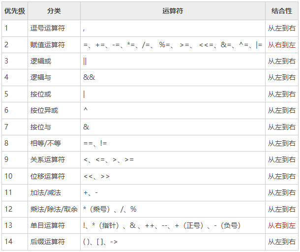

运算符
算数运算符
| 运算符 | 描述 |
|---|---|
| + | 相加 |
| - | 相减 |
| * | 相乘 |
| / | 相除 |
| % | 求余 |
注意： ++（自增）和 –（自减）在 Go 语言中是单独的语句，并不是运算符。
关系运算符
| 运算符 | 描述 |
|---|---|
| == | 检查两个值是否相等，如果相等返回 True 否则返回 False。 |
| != | 检查两个值是否不相等，如果不相等返回 True 否则返回 False。 |
| > | 检查左边值是否大于右边值，如果是返回 True 否则返回 False。 |
| >= | 检查左边值是否大于等于右边值，如果是返回 True 否则返回 False。 |
| < | 检查左边值是否小于右边值，如果是返回 True 否则返回 False。 |
| <= | 检查左边值是否小于等于右边值，如果是返回 True 否则返回 False。 |
逻辑运算符
| 运算符 | 描述 |
|---|---|
| && | 逻辑 AND 运算符。 如果两边的操作数都是 True，则为 True，否则为 False。 |
| ll | 逻辑 OR 运算符。 如果两边的操作数有一个 True，则为 True，否则为 False。 |
| ! | 逻辑 NOT 运算符。 如果条件为 True，则为 False，否则为 True。 |
位运算符
位运算符对整数在内存中的二进制位进行操作。
| 运算符 | 描述 |
|---|---|
| & | 参与运算的两数各对应的二进位相与。（两位均为1才为1） |
| l | 参与运算的两数各对应的二进位相或。（两位有一个为1就为1） |
| ^ | 参与运算的两数各对应的二进位相异或，当两对应的二进位相异时，结果为1。（两位不一样则为1） |
| << | 左移n位就是乘以2的n次方。“a<<b”是把a的各二进位全部左移b位，高位丢弃，低位补0。 |
| >> | 右移n位就是除以2的n次方。“a>>b”是把a的各二进位全部右移b位。 |
赋值运算符
| 运算符 | 描述 |
|---|---|
| = | 简单的赋值运算符，将一个表达式的值赋给一个左值 |
| += | 相加后再赋值 |
| -= | 相减后再赋值 |
| *= | 相乘后再赋值 |
| /= | 相除后再赋值 |
| %= | 求余后再赋值 |
| <<= | 左移后赋值 |
| >>= | 右移后赋值 |
| &= | 按位与后赋值 |
| l= | 按位或后赋值 |
| ^= | 按位异或后赋值 |
运算符优先级
